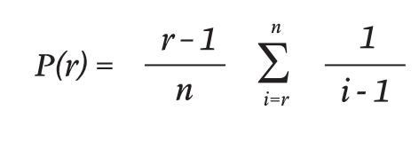
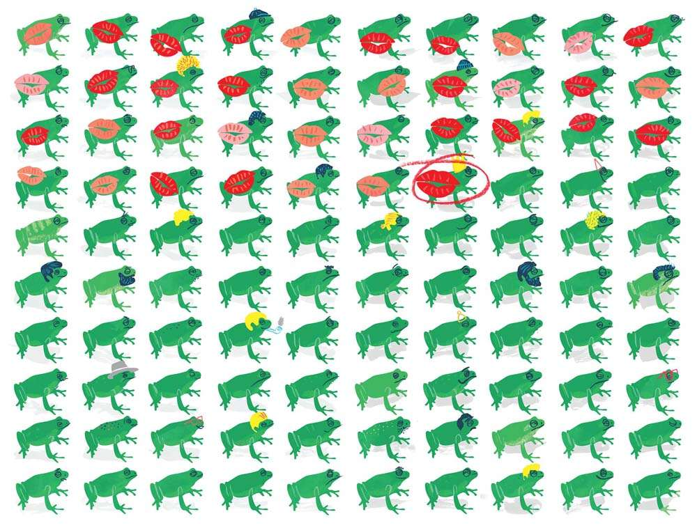
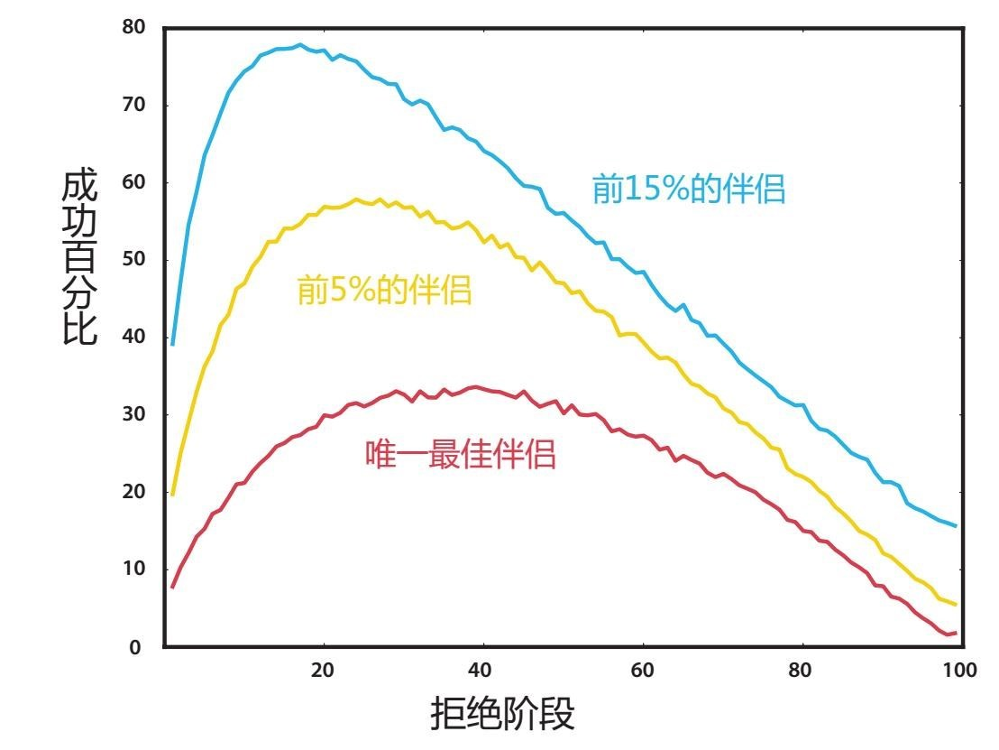

在恋爱中，做长远打算颇具风险。我们大多数人早晚都要告别无忧无虑的单身生活，安定下来。我们放荡不羁的日子（如果有的话）已经远去，到了找个终身伴侣的时候了。但我们怎么知道是否真的找到“适合你的人”了呢？就如每个数学家都会告诉你的，这是两方面的平衡：耐心等待对的人出现，有远见锁定目标以防好的都被抢走。问问那些在黄金单身汉悖论上摔过跤的人就知道了。
如果你决定永远不要安定下来，那么在晚年你便能有闲情逸致列出你曾经的情人名单，为他们各自有可能成为多好的人生伴侣来排个名。我承认，到那时名单也没多大意义了。然而你若能早些列出名单，选择人生伴侣这件事就会容易得多。
这些潜在对象都在大千世界中等待着你发现。这个名单从某种角度来讲的确是存在的，哪怕只在想象中。但问题是，你要如何在对未来不明了的情况下从假想名单中找到能安定下来的最佳人选呢？
让我们暂且假设约会的规则很简单：一旦决定安定下来，离开约会游戏，你便无从得知名单上有可能出现的未来伴侣；同样，一旦拒绝某人，你也不能在日后反悔。反正我的体会一向如此：人们仿佛格外反感曾经拒绝自己的人多年后因找不到更好的而回头。
当我们这样设置约会情景时，一个叫作“最优停止理论”的数学课题可以为寻找“适合你的人”提供最佳策略。结论呈现出惊人的合理性：
年轻时在这方面投入些时间，拒绝把遇到的任何人当作人生伴侣，直到你熟悉恋爱市场的行情。这个阶段一旦过去，选择接下来出现的第一个比之前所遇都要好的人。
但最优停止理论还不止这些，因为你停止找寻并和最佳人选安定下来的概率（在如下公式中用P代表），与潜在恋人（n）中被你拒绝的人数（r）是相关联的，这种关系可以用一个绝妙的公式来表达：

这公式看似简单，却蕴藏着能量。它可以告诉你在拒绝多少人后找到完美伴侣的概率最大。
它告诉你，如果你一生注定要有10段恋爱，那么找到“那个他”的最大概率发生在拒绝4个恋人之后（代表39.87%的恋爱经历）。如果你注定谈20段恋爱，则要拒绝前8个人（那个对的人在38.42%处等你）。如果你注定有无数个伴侣，则要拒绝前37%的人，成功率稍大于1/3。[1]
我知道我是数学家，所以怀有偏见，但是这个结果着实让我震惊。如果你选择不去遵循这个策略，而是随意和一个人安定下来，那么你找到真爱的概率只有1/n：如果你一生注定与20个人谈恋爱，概率则只有5%。但你只要遵循这个策略拒绝前37%的恋人，便能大幅度地改变命运，在有20个潜在恋人的情形中使成功概率增长到38.42%。
好吧，在我扯得更远之前，你很可能已经发现了这个恋爱计划中的问题。如果你不是16世纪的英国贵族，你的潜在伴侣不会事先排队等着你，你也不会知道一生可能有多少个恋爱对象。除非你真是休·海夫纳，否则也不太可能和无数人谈恋爱。
不过好在这个问题还有另一个更适合你我这般凡人的版本，它的结果同样令人惊叹。与其需要预知你的情侣人数，这个关于未来的问题只需要你预估自己的恋爱窗口有多长。这个例子中的数学运算更加烦琐[2]，虽然之前的简单法则再次呈现，但是这里的37%是与时间，而不是与人数有关。
假设你从15岁开始谈恋爱，希望在40岁以前安定下来。在前37%的约会窗口中（刚过24岁生日），你要拒绝所有人：用这段时间熟悉行情并获得现实的对人生伴侣的期待。一旦过了拒绝阶段，你要选择下一个出现的比之前每一位恋人都好的那个人。
遵循这个策略绝对会为你提供找到最佳伴侣的最佳机会。不过请注意：就连这个版本都存在漏洞。
假如在前37%的拒绝阶段中你遇到了一个魅力无穷、帅气逼人、谈吐得体的人——一个从各方面看都是完美搭档的人。然而还未遇到所有潜在恋人的你无从得知他就是你列表上的最佳伴侣。你如果遵循了数学法则，则要遵守拒绝阶段规则从而放弃他。可惜，拒绝阶段过去后，当你要认真地寻找人生伴侣时却再也找不到更好的人选了。根据规定，你需要在余生拒绝所有人，孤独终老，心中怀着对数学公式的深深憎恶。
同样，想象你特别不走运，前37%遇到的都是让你忍无可忍的无聊乏味人士。还好你处在拒绝阶段，所以你不会和他们共度余生。然而，现在想象一下接下来出现的那个人，他依然糟糕，只比前面几位好一点点。如果你遵循了数学法则，不幸地，你恐怕要和这个人结婚，被困入差强人意的婚姻。
不过考虑到所有风险，这依然是恋爱的简单法则能带给我们的最佳策略。我觉得从现实生活中很多人的行为角度来看，这听上去也比较可靠。我们一开始常常会和一些人恋爱，而没有认真考虑寻找终身伴侣的问题，直到我们快步入30岁。在欧洲，女人平均27.5岁结婚，非常符合这个理论。全欧洲男人平均结婚年龄在30.33岁，这充分证明了男人对安定时间上限比较宽松的假设。
除了能帮助人们寻找伴侣，这个策略还适用于一系列人们希望知晓何时应该停止找寻的情形中。你有三个月的时间寻找住所？请排除在第一个月中找到的所有选择，接下来一旦遇到最心仪的选择便可以做出决定。你在招聘秘书？请拒绝前37%的应聘者，然后把机会提供给接下来出现的、比之前任何人都让你满意的人。其实，寻找秘书是这个理论中最著名的构想，而这种方式往往被称为“秘书问题”。

不论应用方式以及我的警告是怎样的，我或许依然夸大了这“拒绝37%”策略在恋爱中的应用意义，因为还有一个漏洞我尚未提及。到目前为止，这个数学法则一直假设你只对最佳可能性感兴趣。然而当你的要求放宽时，情况便会发生些许变化。在现实生活中，我们很多人如果找不到“那个他”，便希望能和一个还不错的伴侣在一起而不愿单身。如果你找到的是潜在伴侣中最好的5%或15%，便会很开心而不坚持孤注一掷，情况又将如何？
数学家依然能够提供一些答案。我们可以在每一种情形里运用数学家熟知的蒙特卡罗模拟来探索最佳策略。其中的理念是在电脑程序中设置类似数学中的《土拨鼠日》那样的情景，允许你模拟几万种不同人生，每种里面都会随机出现一个匹配度不同的伴侣。这个寻爱的虚拟程序能够通过设置37%以外的不同拒绝段，对每一种人生体验进行测试。在每次人生模拟结束后，“事后诸葛亮”的程序会回头看所有可能出现的伴侣，并计算策略是否成功。
如果你重复这个过程来测试每种不同拒绝段、三种不同成功标准（唯一最佳伴侣、前5%的伴侣、前15%的伴侣），你会看到类似如下图像：

红线是我们的原始问题。根据数学预测，这里最高成功率伴随着37%的拒绝范围，也给了你37%的与完美伴侣共度余生的可能性。
然而当你把条件放宽，愿意接受一生潜在伴侣中前5%的某个合适人选，你则要看黄色的线。当你拒绝了恋爱窗口前22%的阶段中出现的所有人并接受接下来出现的比之前都好的选择时，你将获得最大成功率。遵循这个策略，你便有57%的机会能和前5%合适人选中的一人共度余生。
如果你的条件再宽松一些，愿意接受前15%的人选之一，那么你只需要用19%的恋爱窗口期来试水，就如蓝色线所示。在这个策略中，你的成功概率有78%之大，比传统的孤注一掷做法要安全得多。
这些点子依然不完美。生活伴侣并不像房子或秘书，不是买得起就可以得到的。然而我觉得这个微妙而简单的问题为真实场景提供了一些好的见解，即便你不能原封不动地照搬。毕竟这就是数学的目的——使真实场景抽象化，从而帮助你发现易被“情绪”等杂乱因素掩盖的潜在规律和联系。
[1] 当n接近无穷大时，总和可以通过欧拉数e来估算：P（1/e） = 1/e。
[2] 我能够恰当地做出解释，但是它真的非常复杂。让我们面对现实，我们都有更有意义的事要去做。